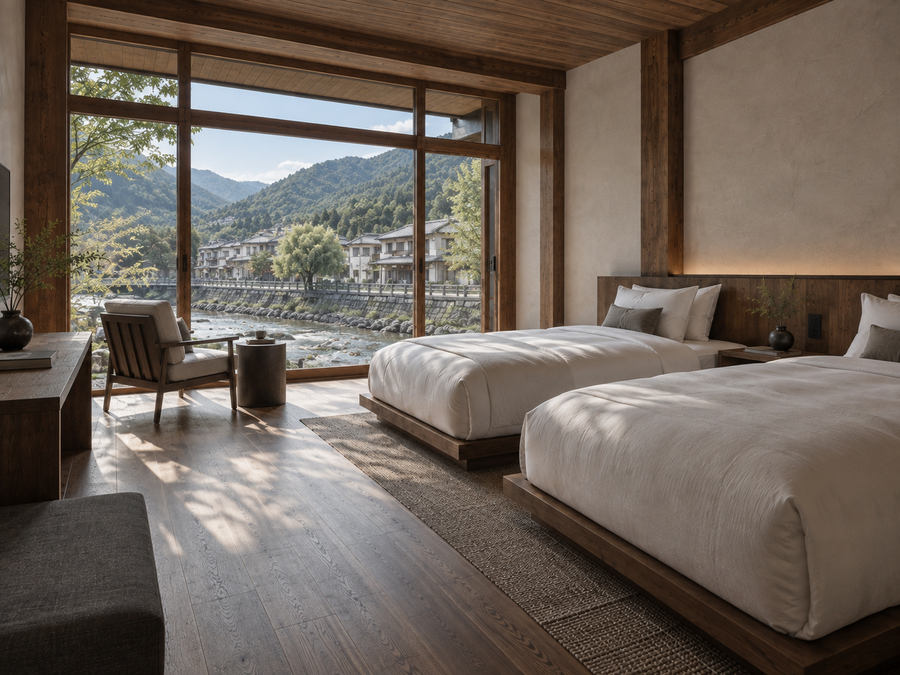
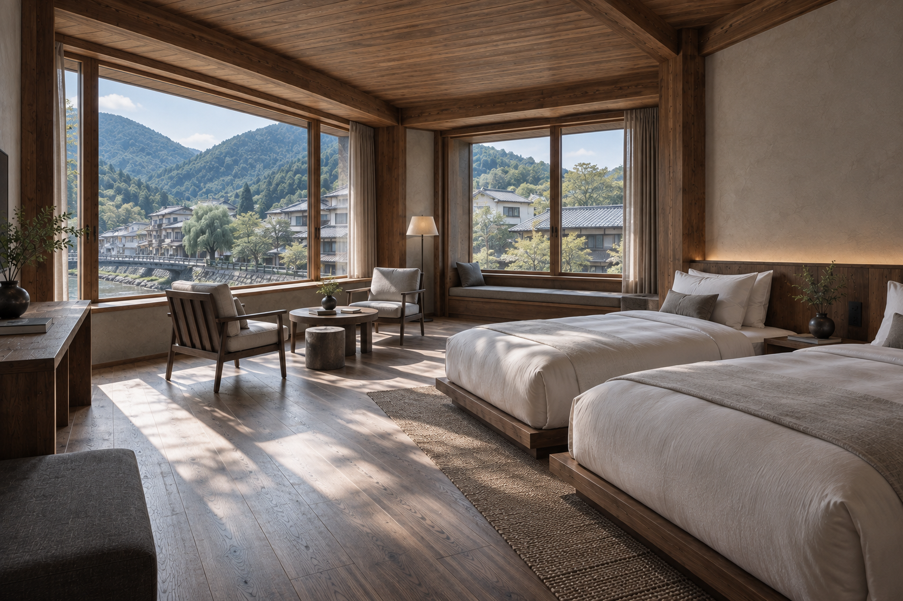
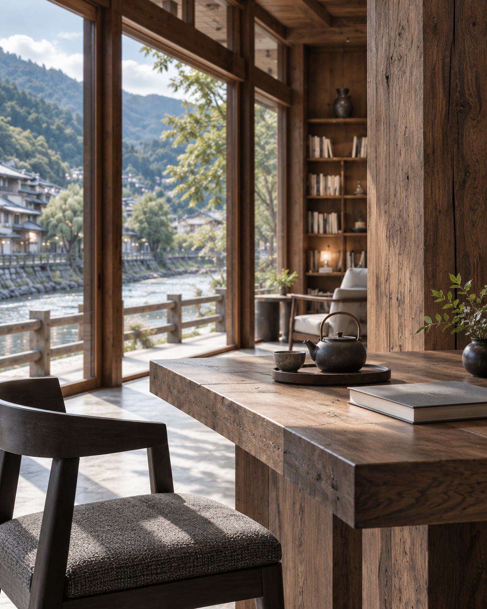

GARDEN
庭を見る部屋。
中庭に面した、
TSUGIの基本となる客室。
障子越しに入る光と、
季節ごとに変わる庭の景色を楽しめます。
- CAPACITY
- 2 guests
- SIZE
- 32㎡
- BED
- Twin
- VIEW
- Courtyard
01 — STAY
客室は8室。
温泉に入り、食べ、休む。
その間にある時間まで、
ゆっくり過ごせるように整えました。
ROOMS
8室を、3つのタイプに分けています。
広さの序列ではなく、
窓の向きや光、景色の違いからお選びください。
GARDEN
中庭に面した、
TSUGIの基本となる客室。
障子越しに入る光と、
季節ごとに変わる庭の景色を楽しめます。

RIVER
建物の川側にある客室。
窓辺に座ると、
木々の向こうから川の音が聞こえます。

CORNER
建物の角に位置する、
少し広めの客室。
朝と夕方で変わる光を感じながら、
ゆっくり過ごせる空間です。
DETAIL / 09
古い木組みと新しい納まり。
光が触れる細部を残しています。

BATH


STONE / WATER / LIGHT
以前の浴場に使われていた石を一部残し、
今の使い方に合わせて整え直しました。
内湯と、小さな外湯。
夜と朝で変わる光の中で、
静かに湯に入るための場所です。
DINING
華やかな料理を並べるのではなく、
この場所で食べたいものを、一皿ずつ。
地元の野菜、川魚、米、発酵食品。

一日の終わりに、
温かいものをゆっくり食べる夕食。

ご飯、味噌汁、野菜、卵。
朝に必要なものを、
丁寧に整えます。
LOUNGE


READ / TEA / WINDOW
12室から8室へ減らしたとき、空いた場所の一部をラウンジにしました。
本と、お茶と、大きなテーブル。何もしない時間も、ここで過ごせます。
STAY INFORMATION
FAQ
はい。小学生以上のお子さまからご宿泊いただけます。
館内は静かに過ごすことを前提とした空間のため、
未就学児のご宿泊は受け付けていません。
はい。宿泊者専用の無料駐車場をご用意しています。
1室につき1台を基本とし、
2台以上でお越しの場合は事前にご相談ください。
はい。素泊まりプランもご利用いただけます。
周辺には飲食店が多くないため、
夕食を外で予定される場合は事前に営業時間などをご確認ください。
できる限り対応します。
ご予約時にアレルギーの内容をお知らせください。
ただし、調理環境を完全に分けることはできないため、
重篤なアレルギーについては対応できない場合があります。
現在、浴場は宿泊者専用です。
日帰り入浴は受け付けていません。
周辺には徒歩圏内に共同浴場があります。
建物の一部に段差や階段があります。
完全なバリアフリー対応ではありません。
移動に不安がある場合は、
ご予約前にご相談ください。